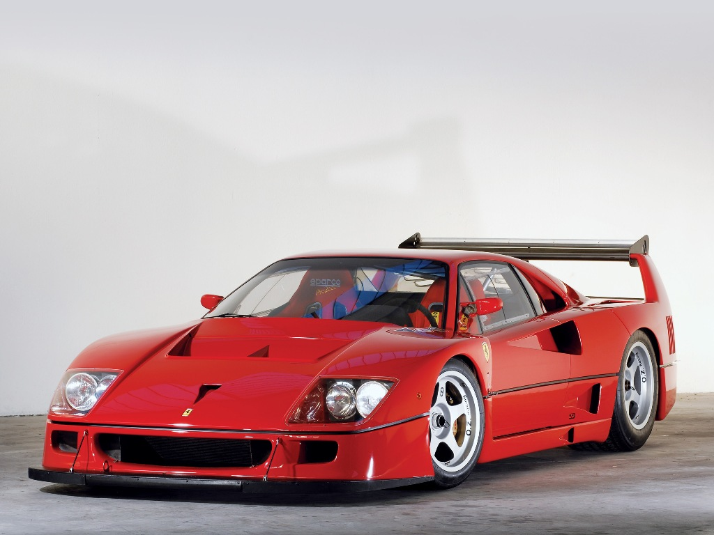
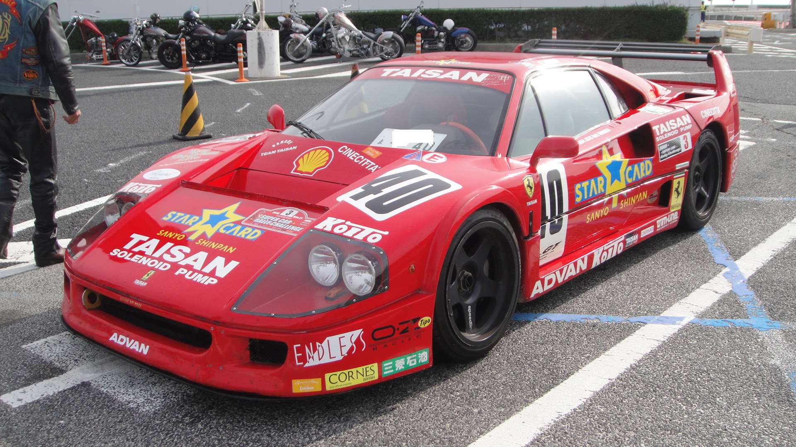
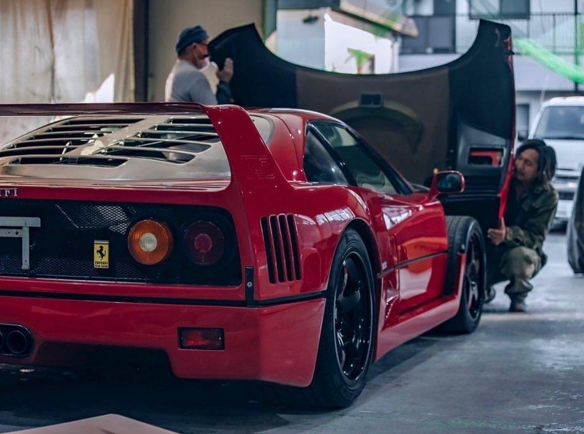

La Ferrari F40 est une supercar GT et de compétition, du constructeur automobile italien Ferrari. Produite entre 1987 et 1992, pour fêter les quarante ans de la marque, elle succède à la Ferrari 288 GTO. Ultime création du vivant du Commendatore Enzo Ferrari (1898-1988), elle est au moment de sa sortie, la voiture la plus rapide, la plus puissante et la plus chère de l'histoire de l'automobile. Elle valait 1 000 000 € en 2015. En 2020, sa cote avoisine 1 300 000 €.
La F40 est un modèle mythique et ultra rare de la gamme. Crée et superviser par Enzo Ferrari lui meme 1 an avant de mourrir, elle représente l'essence meme de la Scuderia Ferrari. Equipper d'un bloc moteur V8 2.9L full alluminium en position central arrière de 478 chevaux booster par deux turbocompresseurs IHI permet un 0 à 100 km/h en 3.9s. La f40 atteint une vitesse max de 324 km/h en 21.8s au 1000m départ arreter. Elle propose un couple 577nmpour une transmission a propulsion. Son poid a vide est de seulement 1088kg ce qui en fait un monstre de puissance pour l'epoque et un vertiable artefact pour les passionés. Car en efffet, la F40 transpire avant tout la passion. En effet la carrosserie en fibre de verre directement inspirer de la competition pour le plus grand plaisir de notre chere Enzo. Les suspensions avant et arrière, indépendantes, sont à bras transversaux avec ressorts hélicoïdaux et barres stabilisatrices. Grâce aux amortisseurs oléopneumatiques réglables depuis l'habitacle, les suspensions peuvent être réglées selon trois niveaux différents de hauteur et de rigidité, en fonction du style de conduite et des conditions d'utilisation
Ce modele specialement fabriquer dans une version encore plus racing pour les amateurs de circuit et de competitions du dimanche. Cette version reste homologué pour la route.
Cette version est uniquement reserver au competitions. En effet elle n'est pas homologué pour la route et est optimisé pour la competition.
Le celebre atelier de modification LibertyWalk est en train de preparer secretement une version de la F40 qui sera reveler au monde en fevrirer 2023
